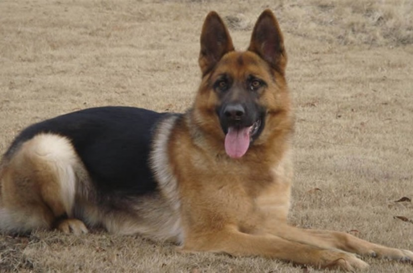
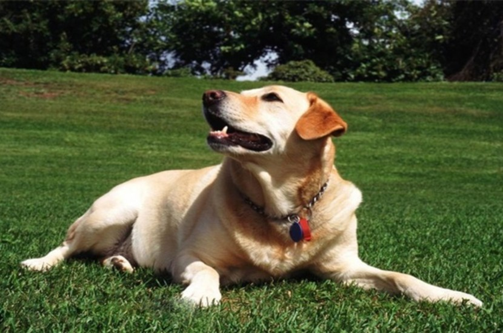

我们优质的产品
可以有相关描述之类的。。。。。。

德国牧羊犬
德国牧羊犬又名德国黑背，它身形敏健，体型高大，外观威猛，适应于动作式工作环境，工作能力强，聪明且对人忠诚， 在以前作为牧羊犬使用
秋田犬
秋田犬性格温顺，个性沉着，身体强健，十分勇敢，易被驯服，对主人极其忠诚，是“忠犬八公”中的小八原型。
金毛
金毛是现如今常见流行的家庭饲养犬，它容易饲养，对主人要求不多，喜欢户外活动，性格热情好动、机灵警惕、对人忠诚， 对小孩或婴儿十分友善，智商较高。
中国田园犬
中华田园犬是我国本土最为古老的犬种，民间称为土狗，北方又称柴狗，性情温顺，热情友善

拉布拉多
拉布拉多又称寻回犬，是世界三大无攻击性的犬种之一，其个性忠诚大气、憨厚温和、阳光开朗，智商也极高， 位列世界犬类第六名，对于主人较为粘人，尤其对小孩儿童较为友善。
可以添加多个产品图片，暂时未做分页